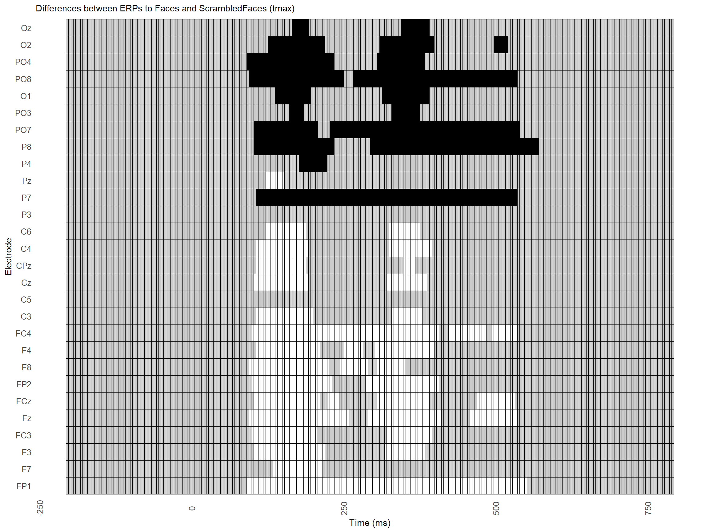
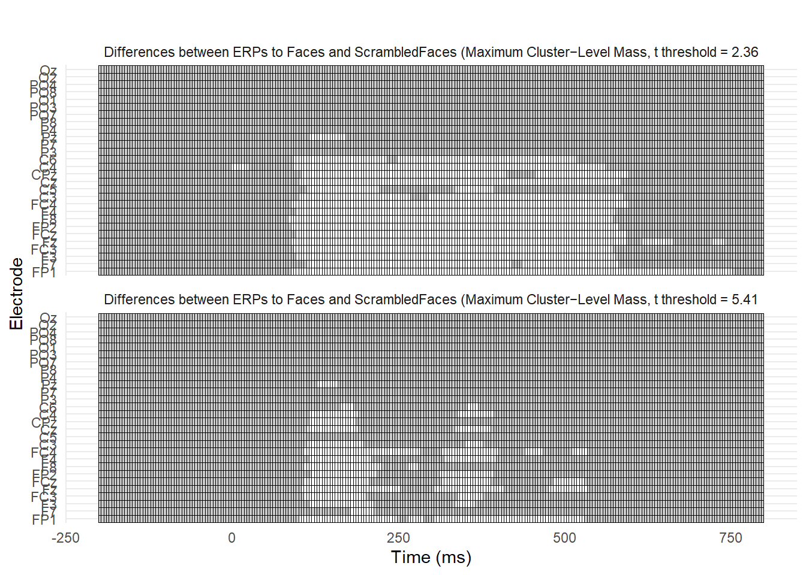

progettotest
Dataset
Questo lavoro di gruppo richiede di effettuare l’analisi di un dataset ERP.
Il dataset è parte di ERPcore, e consiste in un esperimento con 40 partecipanti esposti alla visione passiva di quattro tipologie di stimoli:
- Volti
- Volti scrambled
- Automobili
- Automobili scrambled Questo tipo di paradigma è tipicamente usato per studiare i processi corticali sottostanti l’elaborazione di volti, e si associano ad uno specifico potenziale evento-relato, la N170.
Warning: Using `size` aesthetic for lines was deprecated in ggplot2 3.4.0.
ℹ Please use `linewidth` instead.
`summarise()` has grouped output by 'channel'. You can override using the
`.groups` argument.# 1) Define the full grid of time & channel (for each threshold)
# Assume you know the full range and step of your 'time' variable:
time_vals <- unique(df$time)
channel_vals <- unique(raster_df$channel)
full_grid <- expand_grid(
threshold = unique(raster_df$threshold),
channel = channel_vals,
time = time_vals
)
# 2) Left-join your results onto that grid
plot_df <- full_grid %>%
left_join(raster_df, by = c("threshold", "channel", "time"))
# 3) Define colors so that ANY missing t_obs (i.e. NA) → gray
plot_df <- plot_df %>%
mutate(
color = case_when(
t_obs > threshold & p_adj < 0.05 ~ "white", # significant positive
t_obs < -threshold & p_adj < 0.05 ~ "black", # significant negative
TRUE ~ "grey80" # all else
)
)%>%
mutate(threshold_label = case_when(
threshold == t_crit_05 ~ "Differences between ERPs to Faces and ScrambledFaces (Maximum Cluster−Level Mass, t threshold = 2.36",
threshold == t_crit_001 ~ "Differences between ERPs to Faces and ScrambledFaces (Maximum Cluster−Level Mass, t threshold = 5.41"
))
# 4) Plot with ggplot2
ggplot(plot_df, aes(x = time, y = channel, fill = color)) +
geom_tile(color = "black", size = 0.3) +
facet_wrap(~ threshold_label, ncol = 1) +
scale_fill_manual(values = c("white" = "white", "black" = "black", "grey80" = "grey80")) +
labs(
title = "",
x = "Time (ms)", y = "Electrode"
) +
theme_minimal() +
theme(legend.position = "none")
# 3) Build the full grid of channel×time:
full_grid <- expand_grid(
channel = unique(t_df$channel),
time = unique(t_df$time)
)
# 4) Left‐join both tables onto it:
plot_df <- full_grid %>%
left_join(t_df %>% select(channel, time, t_obs), by = c("channel","time")) %>%
left_join(raster_df %>% select(channel, time, p_adj), by = c("channel","time"))
t_crit_05 <- 2.36
# For uncorrected p < 0.001
t_crit_001 <- 5.41
# After running the first with t_crit = 2.36
final_df_A <- plot_df %>% mutate(threshold = t_crit_05)
# After running the second with t_crit = 5.41
final_df_B <- plot_df %>% mutate(threshold = t_crit_001)
combined_df <- bind_rows(final_df_A, final_df_B)
combined_df <- combined_df %>%
mutate(
color = case_when(
t_obs > threshold ~ "white", # significant positive
t_obs < -threshold ~ "black", # significant negative
TRUE ~ "grey80" # all else
)
)%>%
mutate(threshold_label = case_when(
threshold == t_crit_05 ~ "Differences between ERPs to Targets and Standards (Maximum Cluster−Level Mass, t threshold = 2.36",
threshold == t_crit_001 ~ "Differences between ERPs to Targets and Standards (Maximum Cluster−Level Mass, t threshold = 5.41"
))
# 4) Plot with ggplot2
ggplot(combined_df, aes(x = time, y = channel, fill = color)) +
geom_tile(color = "black", size = 0.3) +
facet_wrap(~ threshold_label, ncol = 1) +
scale_fill_manual(values = c("white" = "white", "black" = "black", "grey80" = "grey80")) +
labs(
title = "",
x = "Time (ms)", y = "Electrode"
) +
theme_minimal() +
theme(legend.position = "none")df_CAD <- df %>%
filter(time >= 150, time <= 190,channel %in% c("F4","FC4","F8"))
mod_mix=lmer(value~ channel*condition +(channel|id),data=df_CAD,control = lmerControl(optimizer = "optimx", optCtrl = list(method = "nlminb")))Caricamento dei namespace richiesti: optimxcar::Anova(mod_mix)Analysis of Deviance Table (Type II Wald chisquare tests)
Response: value
Chisq Df Pr(>Chisq)
channel 17.861 2 0.0001323 ***
condition 1914.497 1 < 2.2e-16 ***
channel:condition 10.633 2 0.0049098 **
---
Signif. codes: 0 '***' 0.001 '**' 0.01 '*' 0.05 '.' 0.1 ' ' 1df_CAD$residuals=residuals(mod_mix)
p <- ggplot(df_CAD, aes(x=id, y=residuals,fill=condition)) + geom_boxplot()
pdataCoeff=obs2coeffWithin(value~ channel*condition,data=df,units=~id)
colnames(dataCoeff$coeffWithin) [1] "(Intercept)" "channelF7"
[3] "channelF3" "channelFC3"
[5] "channelFz" "channelFCz"
[7] "channelFP2" "channelF8"
[9] "channelF4" "channelFC4"
[11] "channelC3" "channelC5"
[13] "channelCz" "channelCPz"
[15] "channelC4" "channelC6"
[17] "channelP3" "channelP7"
[19] "channelPz" "channelP4"
[21] "channelP8" "channelPO7"
[23] "channelPO3" "channelO1"
[25] "channelPO8" "channelPO4"
[27] "channelO2" "channelOz"
[29] "conditionScrambledFaces" "channelF7:conditionScrambledFaces"
[31] "channelF3:conditionScrambledFaces" "channelFC3:conditionScrambledFaces"
[33] "channelFz:conditionScrambledFaces" "channelFCz:conditionScrambledFaces"
[35] "channelFP2:conditionScrambledFaces" "channelF8:conditionScrambledFaces"
[37] "channelF4:conditionScrambledFaces" "channelFC4:conditionScrambledFaces"
[39] "channelC3:conditionScrambledFaces" "channelC5:conditionScrambledFaces"
[41] "channelCz:conditionScrambledFaces" "channelCPz:conditionScrambledFaces"
[43] "channelC4:conditionScrambledFaces" "channelC6:conditionScrambledFaces"
[45] "channelP3:conditionScrambledFaces" "channelP7:conditionScrambledFaces"
[47] "channelPz:conditionScrambledFaces" "channelP4:conditionScrambledFaces"
[49] "channelP8:conditionScrambledFaces" "channelPO7:conditionScrambledFaces"
[51] "channelPO3:conditionScrambledFaces" "channelO1:conditionScrambledFaces"
[53] "channelPO8:conditionScrambledFaces" "channelPO4:conditionScrambledFaces"
[55] "channelO2:conditionScrambledFaces" "channelOz:conditionScrambledFaces" Y=dataCoeff$coeffWithin[,29]+cbind(channelFP1=0,dataCoeff$coeffWithin[,30:56])
colnames(Y)=gsub(":conditionScrambledFaces","",colnames(Y))
colnames(Y) [1] "channelFP1" "channelF7" "channelF3" "channelFC3" "channelFz"
[6] "channelFCz" "channelFP2" "channelF8" "channelF4" "channelFC4"
[11] "channelC3" "channelC5" "channelCz" "channelCPz" "channelC4"
[16] "channelC6" "channelP3" "channelP7" "channelPz" "channelP4"
[21] "channelP8" "channelPO7" "channelPO3" "channelO1" "channelPO8"
[26] "channelPO4" "channelO2" "channelOz" res=flip(Y,perms=10000)
res=flip.adjust(res)
summary(res) Call:
flip(Y = Y, perms = 10000)
9999 permutations.
Test Stat tail p-value Adjust:maxT sig.
channelFP1 t -6.650 >< 0.0002 0.0002 ***
channelF7 t -4.192 >< 0.0002 0.0006 ***
channelF3 t -4.061 >< 0.0004 0.0006 ***
channelFC3 t -3.393 >< 0.0002 0.0036 **
channelFz t -7.126 >< 0.0002 0.0002 ***
channelFCz t -6.458 >< 0.0002 0.0002 ***
channelFP2 t -4.953 >< 0.0002 0.0002 ***
channelF8 t -4.696 >< 0.0002 0.0002 ***
channelF4 t -4.955 >< 0.0002 0.0002 ***
channelFC4 t -6.271 >< 0.0002 0.0002 ***
channelC3 t -4.719 >< 0.0002 0.0002 ***
channelC5 t -1.628 >< 0.1128 0.2098
channelCz t -5.019 >< 0.0002 0.0002 ***
channelCPz t -5.017 >< 0.0002 0.0002 ***
channelC4 t -4.534 >< 0.0002 0.0002 ***
channelC6 t -4.037 >< 0.0002 0.0006 ***
channelP3 t 2.580 >< 0.0094 0.0318 *
channelP7 t 7.987 >< 0.0002 0.0002 ***
channelPz t -0.757 >< 0.4614 0.4614
channelP4 t 3.228 >< 0.0010 0.0054 **
channelP8 t 7.618 >< 0.0002 0.0002 ***
channelPO7 t 7.737 >< 0.0002 0.0002 ***
channelPO3 t 3.660 >< 0.0004 0.0020 **
channelO1 t 3.644 >< 0.0004 0.0020 **
channelPO8 t 6.915 >< 0.0002 0.0002 ***
channelPO4 t 4.392 >< 0.0002 0.0004 ***
channelO2 t 4.248 >< 0.0002 0.0006 ***
channelOz t 3.130 >< 0.0010 0.0070 **# get the a z value from the adjusted p-value for each channel, just for visual purposes:
pvals=getFlip(res,"Adjust:maxT")
rownames(pvals)=gsub("channel","",rownames(pvals))
# match to eeg coordinates
data("eegcoord")
cidx <- match(rownames(pvals),rownames(eegcoord))
# plot t-stat in 2d
eegspace(eegcoord[cidx,4:5],-log10(pvals[,1]),cex.point = 3,colorlab="-log10(adj-p)",mycolors=heat.colors(4))